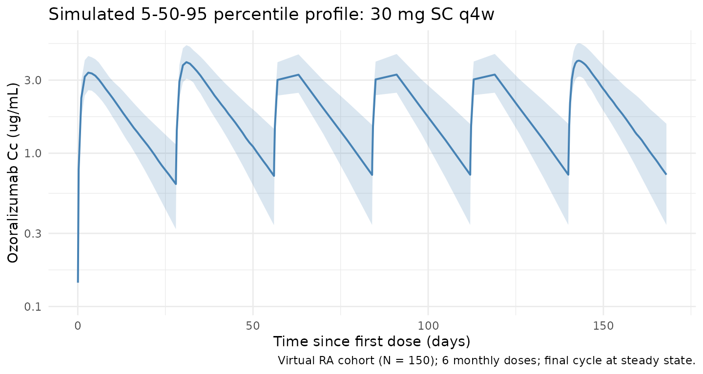
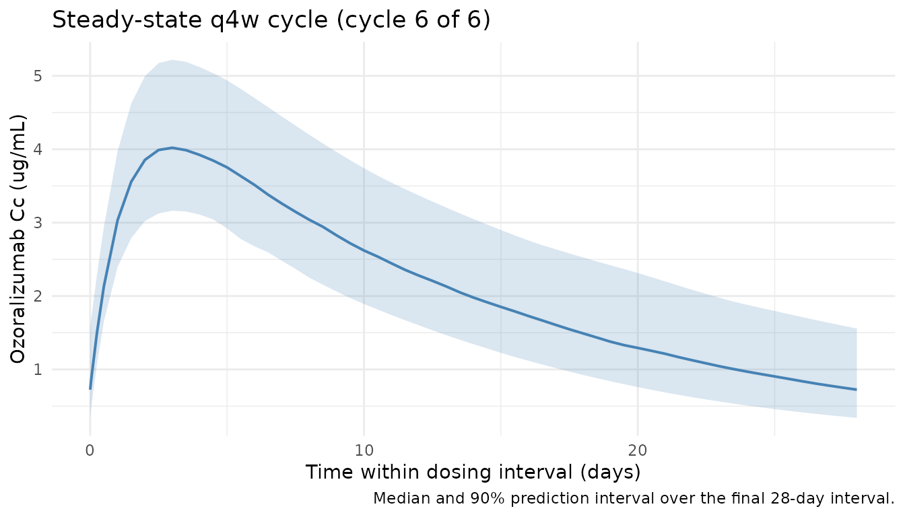
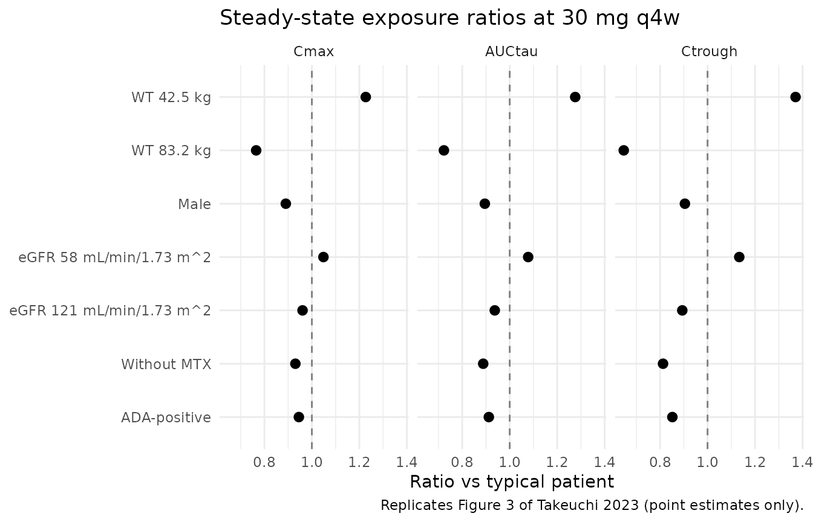

Takeuchi_2023_ozoralizumab
Source:vignettes/articles/Takeuchi_2023_ozoralizumab.Rmd
Takeuchi_2023_ozoralizumab.RmdModel and source
- Citation: Takeuchi T, Chino Y, Mano Y, Kawanishi M, Sato Y, Uchida S, Tanaka Y. Population Pharmacokinetics of Ozoralizumab in Patients with Rheumatoid Arthritis. J Clin Pharmacol. 2024;64(4):418-427. doi:10.1002/jcph.2380
- Description: One-compartment population PK model with first-order absorption for subcutaneous ozoralizumab (anti-TNF VHH NANOBODY) in Japanese patients with rheumatoid arthritis (Takeuchi 2023)
- Article: J Clin Pharmacol. 2024;64(4):418-427 (open access)
Population
Takeuchi 2023 pooled two clinical trials of subcutaneous ozoralizumab in Japanese patients with rheumatoid arthritis (RA): the OHZORA trial (Phase II/III, with concomitant methotrexate; jRCT2080223971; n = 363) and the NATSUZORA trial (Phase III, without methotrexate; jRCT2080223973; n = 131). After exclusion of placebo-treated patients, protocol violations, BLQ records, and outliers (CWRES absolute value > 6), the analysis dataset comprised 3412 plasma concentrations from 494 patients dosed at 30 or 80 mg every 4 weeks for up to 52 weeks.
Baseline demographics (Table 2): mean age 56 (SD 12, range 21-84) years, 76% female, mean body weight 59 (SD 13, range 35-112) kg, mean baseline albumin 3.9 (SD 0.3) g/dL, mean baseline eGFR 88 (SD 20, range 35-174) mL/min/1.73 m^2 (Japanese formula), mean CDAI 32 (SD 11), mean hs-CRP 1.6 (SD 2.0) mg/dL. 363 of 494 patients (74%) received concomitant methotrexate; 185 of 494 (37%) developed antidrug antibodies. The final-model equation centres body weight at 56.65 kg and eGFR at 85.95 mL/min/1.73 m^2 — the population medians, which sit below the right-skewed means.
The same information is available programmatically via
readModelDb("Takeuchi_2023_ozoralizumab")$population.
Source trace
Every structural parameter, covariate effect, IIV element, and residual-error term is taken from Takeuchi 2023 Table 3 (p. 421) and the final-model equations on p. 422.
| Equation / parameter | Value | Source location |
|---|---|---|
lka (Ka) |
log(0.0343) 1/h |
Table 3, Ka row |
lcl (CL/F, L/h) |
log(9.20 / 1000) L/h |
Table 3, CL/F row (paper reports mL/h) |
lvc (Vd/F) |
log(4.91) L |
Table 3, Vd/F row |
e_wt_cl |
0.847 |
Table 3, “WT on CL/F” |
e_egfr_cl |
0.191 |
Table 3, “eGFR on CL/F” |
e_nomtx_cl |
0.126 |
Table 3, “MTX on CL/F” |
e_male_cl |
0.117 |
Table 3, “Sex on CL/F” |
e_ada_cl |
0.0967 |
Table 3, “ADA on CL/F” |
e_wt_vc |
0.469 |
Table 3, “WT on Vd/F” |
e_male_vc |
0.134 |
Table 3, “Sex on Vd/F” |
var(etalcl) |
0.0423 |
Table 3, omega^2_CL/F |
cov(etalcl, etalvc) |
0.00806 |
Table 3, omega_CL/F-Vd/F |
var(etalvc) |
0.0230 |
Table 3, omega^2_Vd/F |
var(etalka) |
0 (fixed; not modelled) | Table 3, omega^2_Ka fixed |
propSd |
sqrt(0.0347) |
Table 3, sigma^2 = 0.0347 |
| Structure (1-cmt + first-order SC absorption + linear elimination) | n/a | Methods p. 420 / Equations p. 422 |
| WT reference (population median) | 56.65 kg | Final-model equation, p. 422 |
| eGFR reference (population median) | 85.95 mL/min/1.73 m^2 | Final-model equation, p. 422 |
Parameterization notes
-
Unit conversion on CL/F. Takeuchi 2023 reports CL/F
in mL/h. The model file converts to L/h
(
lcl <- log(9.20 / 1000)) so that with Vd/F in L, the ODE termcl/vchas units 1/h andCc = central / vcyields mg/L = ug/mL. -
Multiplicative
(1 + theta * cov)covariate form. Takeuchi parameterises binary covariates asP = theta1 * (1 + theta3 * cov)(Methods p. 420), rather than the more commonexp(theta * cov). The model file uses the paper’s form unchanged. -
Sex / MTX reference-category flips. Takeuchi
encodes Male = 1 with female as the TVCL/TVVd reference, and MTX = 1
with on-MTX as the TVCL reference. To preserve the published TVCL = 9.20
mL/h and TVVd = 4.91 L while storing the data under the canonical
SEXF(1 = female) andCONMED_MTX(1 = on MTX) columns, the model applies the effects as(1 + e_male_* * (1 - SEXF))and(1 + e_nomtx_cl * (1 - CONMED_MTX)). The published coefficient values are unchanged. -
eGFR formula. Takeuchi computes eGFR with the
Japanese formula
194 * Scr^-1.094 * age^-0.287 * (0.739 if female)(Methods p. 420), not MDRD or CKD-EPI. The canonicalCRCLcolumn carries the precomputed eGFR value in mL/min/1.73 m^2. -
Ka has no IIV. The paper fixed
omega^2_Kato 0 because of high shrinkage (Methods p. 421). The model file omitsetalkaaccordingly; Ka is the typical value for every individual. -
Proportional residual error. Takeuchi reports
sigma^2 = 0.0347(NONMEM proportionalY = IPRED * (1 + EPS),EPS ~ N(0, sigma^2)). In nlmixr2’sprop(propSd)notationpropSd = sqrt(sigma^2) = 0.186.
Virtual cohort
The simulations below use a virtual cohort whose covariate distributions approximate the Takeuchi 2023 Table 2 demographics. Subject-level observed data are not publicly released.
set.seed(20260428)
n_subj <- 150
cohort <- tibble::tibble(
id = seq_len(n_subj),
WT = pmin(pmax(rlnorm(n_subj, log(56.65), 0.20), 35, 112)),
SEXF = rbinom(n_subj, 1, 0.76),
CRCL = pmin(pmax(rnorm(n_subj, mean = 88, sd = 20), 35, 174)),
CONMED_MTX = rbinom(n_subj, 1, 0.74),
ADA_POS = rbinom(n_subj, 1, 0.37)
)
tau <- 4 * 7 * 24 # q4w dosing interval, in hours (672 h)
n_doses <- 6 # 6 monthly doses ~= 5 half-lives, last cycle at SS
dose_h <- seq(0, tau * (n_doses - 1), by = tau)
ss_start <- tau * (n_doses - 1)
ss_end <- ss_start + tau
# Observation grid: dense early (first 2 cycles) for absorption-phase
# resolution and dense over the steady-state cycle for NCA. Coarser bridge
# in between to keep the event table small enough for a 5-minute render.
obs_h <- sort(unique(c(
seq(0, 2 * tau, by = 24), # daily through first two cycles
dose_h + 1, dose_h + 6, dose_h + 24, # near-dose absorption resolution
seq(2 * tau, ss_start, by = 7 * 24), # weekly bridge
seq(ss_start, ss_end, by = 12) # 12-hour grid for NCA cycle
)))
ev_dose <- cohort |>
tidyr::crossing(time = dose_h) |>
dplyr::mutate(amt = 30, cmt = "depot", evid = 1L)
ev_obs <- cohort |>
tidyr::crossing(time = obs_h) |>
dplyr::mutate(amt = 0, cmt = NA_character_, evid = 0L)
events <- dplyr::bind_rows(ev_dose, ev_obs) |>
dplyr::arrange(id, time, dplyr::desc(evid)) |>
dplyr::select(id, time, amt, cmt, evid,
WT, SEXF, CRCL, CONMED_MTX, ADA_POS)Simulation
mod <- rxode2::rxode2(readModelDb("Takeuchi_2023_ozoralizumab"))
#> ℹ parameter labels from comments will be replaced by 'label()'
keep_cols <- c("WT", "SEXF", "CRCL", "CONMED_MTX", "ADA_POS")
sim <- as.data.frame(rxode2::rxSolve(mod, events = events, keep = keep_cols))Replicate published figures
Concentration-time profile over the dosing horizon
Trough-only sampling in the original trials precludes a direct dense concentration-time replication of the source figures. The block below shows the simulated 5/50/95th percentile profile over the 6-cycle dosing horizon at the labelled 30 mg q4w regimen, summarised on a per-day grid.
profile <- sim |>
dplyr::filter(!is.na(Cc), time > 0) |>
dplyr::group_by(time) |>
dplyr::summarise(
Q05 = quantile(Cc, 0.05, na.rm = TRUE),
Q50 = quantile(Cc, 0.50, na.rm = TRUE),
Q95 = quantile(Cc, 0.95, na.rm = TRUE),
.groups = "drop"
)
ggplot(profile, aes(time / 24, Q50)) +
geom_ribbon(aes(ymin = Q05, ymax = Q95), alpha = 0.20, fill = "steelblue") +
geom_line(linewidth = 0.7, colour = "steelblue") +
scale_y_log10() +
labs(
x = "Time since first dose (days)",
y = "Ozoralizumab Cc (ug/mL)",
title = "Simulated 5-50-95 percentile profile: 30 mg SC q4w",
caption = paste0("Virtual RA cohort (N = ", n_subj, "); ", n_doses,
" monthly doses; final cycle at steady state.")
) +
theme_minimal()
Steady-state cycle
ss_summary <- sim |>
dplyr::filter(time >= ss_start, time <= ss_end, !is.na(Cc)) |>
dplyr::group_by(time) |>
dplyr::summarise(
Q05 = quantile(Cc, 0.05, na.rm = TRUE),
Q50 = quantile(Cc, 0.50, na.rm = TRUE),
Q95 = quantile(Cc, 0.95, na.rm = TRUE),
.groups = "drop"
)
ggplot(ss_summary, aes((time - ss_start) / 24, Q50)) +
geom_ribbon(aes(ymin = Q05, ymax = Q95), alpha = 0.20, fill = "steelblue") +
geom_line(linewidth = 0.7, colour = "steelblue") +
labs(
x = "Time within dosing interval (days)",
y = "Ozoralizumab Cc (ug/mL)",
title = "Steady-state q4w cycle (cycle 6 of 6)",
caption = "Median and 90% prediction interval over the final 28-day interval."
) +
theme_minimal()
PKNCA validation
NCA on the steady-state q4w cycle (cycle 6). Time within the cycle is re-zeroed so PKNCA computes per-interval Cmax, Cmin, AUC, and Cavg.
nca_conc <- sim |>
dplyr::filter(time >= ss_start, time <= ss_end, !is.na(Cc)) |>
dplyr::mutate(time_nom = time - ss_start, treatment = "30mg_Q4W") |>
dplyr::select(id, time = time_nom, Cc, treatment)
nca_dose <- cohort |>
dplyr::mutate(time = 0, amt = 30, treatment = "30mg_Q4W") |>
dplyr::select(id, time, amt, treatment)
conc_obj <- PKNCA::PKNCAconc(nca_conc, Cc ~ time | treatment + id,
concu = "ug/mL", timeu = "h")
dose_obj <- PKNCA::PKNCAdose(nca_dose, amt ~ time | treatment + id,
doseu = "mg")
intervals <- data.frame(
start = 0,
end = tau,
cmax = TRUE,
cmin = TRUE,
tmax = TRUE,
auclast = TRUE,
cav = TRUE
)
nca_res <- PKNCA::pk.nca(PKNCA::PKNCAdata(conc_obj, dose_obj, intervals = intervals))
nca_summary <- summary(nca_res)
nca_summary
#> Interval Start Interval End treatment N AUClast (h*ug/mL) Cmax (ug/mL)
#> 0 672 30mg_Q4W 150 1420 [22.2] 4.00 [16.2]
#> Cmin (ug/mL) Tmax (h) Cav (ug/mL)
#> 0.683 [49.6] 72.0 [60.0, 84.0] 2.11 [22.2]
#>
#> Caption: AUClast, Cmax, Cmin, Cav: geometric mean and geometric coefficient of variation; Tmax: median and range; N: number of subjectsTypical-patient steady-state exposures vs published Tables S1 / S2
Takeuchi 2023 Supplemental Tables S1 and S2 report median (95%
prediction interval) Cmax, AUCtau, and Ctrough at steady state for the
typical patient and for several covariate-perturbed sub-cohorts (1000
simulations each). The block below repeats the typical-patient
simulation by fixing IIV at zero (rxode2::zeroRe()) and
reading off the maximum, minimum, and trapezoidal AUC over the final
dosing interval. This is a deterministic typical-patient check; it does
not reproduce the 95% prediction interval — that
requires the stochastic block above.
mod_typical <- mod |> rxode2::zeroRe()
ev_typ <- function(cov_row, dose_amt = 30) {
ev_dose <- cov_row |>
tidyr::crossing(time = dose_h) |>
dplyr::mutate(amt = dose_amt, cmt = "depot", evid = 1L)
obs_t <- sort(unique(c(seq(ss_start, ss_end, by = 6), dose_h)))
ev_obs <- cov_row |>
tidyr::crossing(time = obs_t) |>
dplyr::mutate(amt = 0, cmt = NA_character_, evid = 0L)
dplyr::bind_rows(ev_dose, ev_obs) |>
dplyr::arrange(id, time, dplyr::desc(evid)) |>
dplyr::select(id, time, amt, cmt, evid,
WT, SEXF, CRCL, CONMED_MTX, ADA_POS)
}
ss_metrics <- function(cov_row, label) {
ev <- ev_typ(cov_row)
out <- as.data.frame(rxode2::rxSolve(mod_typical, events = ev))
ss <- out |>
dplyr::filter(time >= ss_start, time <= ss_end, !is.na(Cc)) |>
dplyr::arrange(time)
tibble::tibble(
scenario = label,
Cmax_sim = max(ss$Cc),
Ctrough_sim = ss$Cc[which.max(ss$time)],
AUCtau_sim = sum(diff(ss$time) *
(head(ss$Cc, -1) + tail(ss$Cc, -1)) / 2)
)
}
# Typical-patient covariate template:
# WT 56.7 kg, eGFR 86, female (SEXF=1), MTX yes (CONMED_MTX=1), ADA negative (=0)
typical_cov <- tibble::tibble(id = 1L, WT = 56.7, SEXF = 1L, CRCL = 86,
CONMED_MTX = 1L, ADA_POS = 0L)
scenarios <- dplyr::bind_rows(
ss_metrics(typical_cov, "Typical patient"),
ss_metrics(typical_cov |> dplyr::mutate(WT = 42.5), "WT 42.5 kg"),
ss_metrics(typical_cov |> dplyr::mutate(WT = 83.2), "WT 83.2 kg"),
ss_metrics(typical_cov |> dplyr::mutate(SEXF = 0L), "Male"),
ss_metrics(typical_cov |> dplyr::mutate(CRCL = 58), "eGFR 58 mL/min/1.73 m^2"),
ss_metrics(typical_cov |> dplyr::mutate(CRCL = 121), "eGFR 121 mL/min/1.73 m^2"),
ss_metrics(typical_cov |> dplyr::mutate(CONMED_MTX = 0L), "Without MTX"),
ss_metrics(typical_cov |> dplyr::mutate(ADA_POS = 1L), "ADA-positive")
)
#> ℹ omega/sigma items treated as zero: 'etalcl', 'etalvc'
#> ℹ omega/sigma items treated as zero: 'etalcl', 'etalvc'
#> ℹ omega/sigma items treated as zero: 'etalcl', 'etalvc'
#> ℹ omega/sigma items treated as zero: 'etalcl', 'etalvc'
#> ℹ omega/sigma items treated as zero: 'etalcl', 'etalvc'
#> ℹ omega/sigma items treated as zero: 'etalcl', 'etalvc'
#> ℹ omega/sigma items treated as zero: 'etalcl', 'etalvc'
#> ℹ omega/sigma items treated as zero: 'etalcl', 'etalvc'
# Published medians from Takeuchi 2023 Supplemental Tables S1 / S2.
published <- tibble::tribble(
~scenario, ~Cmax_pub, ~AUCtau_pub, ~Ctrough_pub,
"Typical patient", 7.28, 3230, 2.51,
"WT 42.5 kg", 8.93, 4110, 3.45,
"WT 83.2 kg", 5.59, 2320, 1.60,
"Male", 6.55, 2930, 2.31,
"eGFR 58 mL/min/1.73 m^2", 7.60, 3430, 2.80,
"eGFR 121 mL/min/1.73 m^2", 7.02, 3010, 2.24,
"Without MTX", 6.84, 2880, 2.06,
"ADA-positive", 6.95, 2980, 2.23
)
comparison <- dplyr::left_join(scenarios, published, by = "scenario") |>
dplyr::mutate(
Cmax_pct_diff = 100 * (Cmax_sim - Cmax_pub) / Cmax_pub,
AUCtau_pct_diff = 100 * (AUCtau_sim - AUCtau_pub) / AUCtau_pub,
Ctrough_pct_diff = 100 * (Ctrough_sim - Ctrough_pub) / Ctrough_pub
) |>
dplyr::select(scenario,
Cmax_pub, Cmax_sim, Cmax_pct_diff,
AUCtau_pub, AUCtau_sim, AUCtau_pct_diff,
Ctrough_pub, Ctrough_sim, Ctrough_pct_diff)
knitr::kable(
comparison, digits = c(0, 2, 2, 1, 0, 0, 1, 2, 2, 1),
caption = paste("Typical-patient (IIV zeroed) steady-state exposures vs.",
"Takeuchi 2023 Supplemental Tables S1 / S2 medians (1000",
"stochastic simulations). All scenarios at 30 mg SC q4w.")
)| scenario | Cmax_pub | Cmax_sim | Cmax_pct_diff | AUCtau_pub | AUCtau_sim | AUCtau_pct_diff | Ctrough_pub | Ctrough_sim | Ctrough_pct_diff |
|---|---|---|---|---|---|---|---|---|---|
| Typical patient | 7.28 | 7.34 | 0.9 | 3230 | 3256 | 0.8 | 2.51 | 2.56 | 1.9 |
| WT 42.5 kg | 8.93 | 9.01 | 0.9 | 4110 | 4153 | 1.1 | 3.45 | 3.51 | 1.6 |
| WT 83.2 kg | 5.59 | 5.62 | 0.6 | 2320 | 2354 | 1.4 | 1.60 | 1.66 | 3.5 |
| Male | 6.55 | 6.54 | -0.2 | 2930 | 2914 | -0.5 | 2.31 | 2.31 | 0.2 |
| eGFR 58 mL/min/1.73 m^2 | 7.60 | 7.70 | 1.3 | 3430 | 3509 | 2.3 | 2.80 | 2.90 | 3.6 |
| eGFR 121 mL/min/1.73 m^2 | 7.02 | 7.06 | 0.5 | 3010 | 3051 | 1.4 | 2.24 | 2.29 | 2.0 |
| Without MTX | 6.84 | 6.83 | -0.1 | 2880 | 2892 | 0.4 | 2.06 | 2.08 | 0.9 |
| ADA-positive | 6.95 | 6.94 | -0.1 | 2980 | 2969 | -0.4 | 2.23 | 2.18 | -2.3 |
The published values are medians from 1000 stochastic simulations with IIV and RUV; the simulated values here are deterministic (typical-patient, IIV zeroed). For a log-normal individual parameter the median equals the typical value, so for Cmax / AUCtau / Ctrough at fixed covariates the two quantities should agree to within numerical and SS-approach precision.
Replicate Figure 3 forest plot
Takeuchi 2023 Figure 3 plots the ratio of CL/F, Vd/F, Cmax, and AUCtau in a covariate-perturbed patient relative to the typical patient. The forest points are deterministic (covariate effects on typical values), without the stochastic 90% prediction interval that the source plot overlays.
forest <- comparison |>
dplyr::filter(scenario != "Typical patient") |>
dplyr::mutate(
Cmax_ratio = Cmax_sim / comparison$Cmax_sim[1],
AUCtau_ratio = AUCtau_sim / comparison$AUCtau_sim[1],
Ctrough_ratio = Ctrough_sim / comparison$Ctrough_sim[1]
) |>
dplyr::select(scenario, Cmax_ratio, AUCtau_ratio, Ctrough_ratio) |>
tidyr::pivot_longer(-scenario, names_to = "metric", values_to = "ratio") |>
dplyr::mutate(
metric = factor(metric,
levels = c("Cmax_ratio", "AUCtau_ratio", "Ctrough_ratio"),
labels = c("Cmax", "AUCtau", "Ctrough")),
scenario = factor(scenario, levels = rev(unique(scenario)))
)
ggplot(forest, aes(ratio, scenario)) +
geom_vline(xintercept = 1, linetype = "dashed", colour = "grey50") +
geom_point(size = 2.4) +
facet_wrap(~ metric, nrow = 1) +
labs(
x = "Ratio vs typical patient",
y = NULL,
title = "Steady-state exposure ratios at 30 mg q4w",
caption = "Replicates Figure 3 of Takeuchi 2023 (point estimates only)."
) +
theme_minimal()
Errata
No errata, corrigenda, or correction notices were identified at extraction time (Wiley Online Library landing page; PubMed correction-notice search; Google Scholar). The full-model equations on p. 422 are internally consistent with Table 3 (p. 421) and with Supplemental Tables S1-S3 under the typical-patient simulation above.
Assumptions and deviations
-
Sex / MTX reference-category flips. Takeuchi
encodes Male = 1 with female-reference TVCL/TVVd, and MTX = 1 with
on-MTX-reference TVCL. Stored under canonical
SEXF(1 = female) andCONMED_MTX(1 = on MTX), the effects are applied as(1 + e_male_* * (1 - SEXF))and(1 + e_nomtx_cl * (1 - CONMED_MTX))so the published TVCL = 9.20 mL/h and TVVd = 4.91 L are preserved. The published coefficient signs and magnitudes are unchanged. -
eGFR formula. The covariate-column register’s
canonical
CRCLreference values are documented for MDRD (US) and CKD-EPI conventions. Takeuchi uses the Japanese eGFR formula194 * Scr^-1.094 * age^-0.287 * (0.739 if female)with reference value 85.95 mL/min/1.73 m^2. Users applying this model to a non-Japanese cohort should supply CRCL computed by the same Japanese formula or document the substitution. -
Ka has no IIV.
omega^2_Kawas fixed to 0 in the published model because of high shrinkage. Ka is therefore the typical value for every simulated subject. This is faithful to the paper but means individual- level absorption variability is not captured. - Virtual-cohort covariate distributions. The virtual cohort is constructed to match the published marginal Table 2 demographics, not joint distributions: WT lognormal centred at the population median (56.65 kg) and truncated to [35, 112] kg; SEXF Bernoulli(0.76); CRCL N(88, 20) truncated to [35, 174]; CONMED_MTX Bernoulli(0.74); ADA_POS Bernoulli(0.37). Covariate correlations (e.g., albumin / disease activity / age co-variation) are not modelled because Takeuchi did not report them.
- No subject-level observed data. OHZORA / NATSUZORA subject-level data are held by Taisho Pharmaceutical Co., Ltd. and not publicly released. The simulated comparison against Tables S1 / S2 substitutes for a true VPC.
-
Typical-patient comparison. The published Tables S1
/ S2 report medians from 1000 stochastic simulations with IIV and RUV;
the comparison block uses a deterministic typical-patient simulation
(
zeroRe()). For the typical-patient log-normal parameterisation the median equals the typical value, so the comparison is appropriate; the 95% prediction interval the paper reports is not reproduced here.